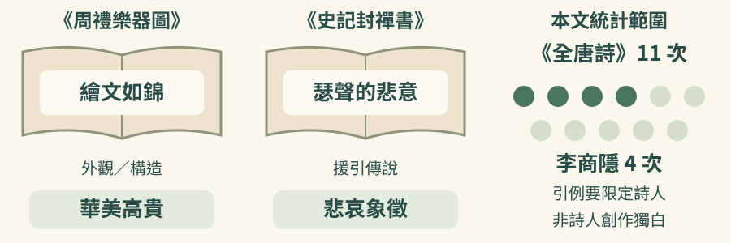
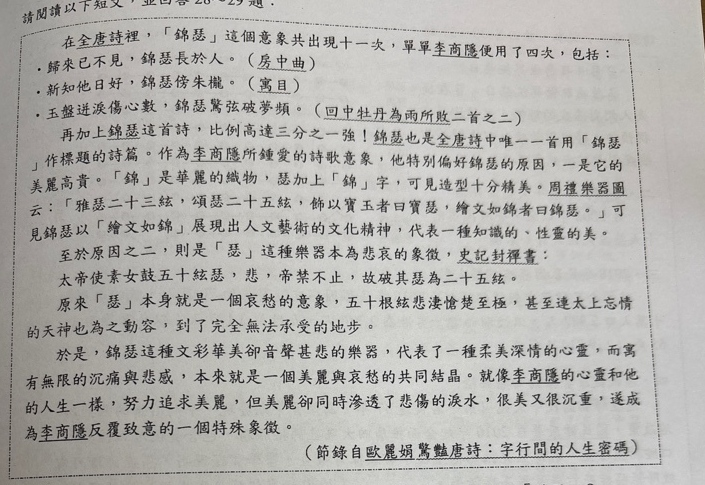
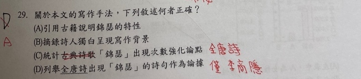

分享原卷｜第29題
完整原題
作答所需文章／材料
在《全唐詩》裡，「錦瑟」這個意象共出現十一次，單單李商隱便用了四次，包括： ・歸來已不見，錦瑟長於人。（〈房中曲〉） ・新知他日好，錦瑟傍朱櫳。（〈寓目〉） ・玉盤迸淚傷心數，錦瑟驚弦破夢頻。（〈回中牡丹為雨所敗二首之二〉） 再加上〈錦瑟〉這首詩，比例高達三分之一強！〈錦瑟〉也是《全唐詩》中唯一一首用「錦瑟」作標題的詩篇。作為李商隱所鍾愛的詩歌意象，他特別偏好錦瑟的原因，一是它的美麗高貴。「錦」是華麗的織物，瑟加上「錦」字，可見造型十分精美。《周禮樂器圖》云：「雅瑟二十三絃，頌瑟二十五絃，飾以寶玉者曰寶瑟，繪文如錦者曰錦瑟。」可見錦瑟以「繪文如錦」展現出人文藝術的文化精神，代表一種知識的、性靈的美。 至於原因之二，則是「瑟」這種樂器本為悲哀的象徵，《史記封禪書》： 太帝使素女鼓五十絃瑟，悲，帝禁不止，故破其瑟為二十五絃。 原來「瑟」本身就是一個哀愁的意象，五十根絃悲淒慘楚至極，甚至連太上忘情的天神也為之動容，到了完全無法承受的地步。 於是，錦瑟這種文彩華美卻音聲悽悲的樂器，代表了一種柔美深情的心靈，而寓有無限的沉痛與悲感，本來就是一個美麗與哀愁的共同結晶。就像李商隱的心靈和他的人生一樣，努力追求美麗，但美麗卻同時滲透了悲傷的淚水，很美又很沉重，遂成為李商隱反覆致意的一個特殊象徵。 （節錄自歐麗娟《驚豔唐詩：字行間的人生密碼》）先想一想，再查看答案、解說與原圖
逐項解析
| 選項與原句 | 判讀 | 句意與判斷理由 |
|---|---|---|
| (A) 引用古籍說明錦瑟的特性 | 應選 | 文中引《周禮樂器圖》說外觀與構造，再引《史記封禪書》說悲哀意象，A直接、準確對應文章。 |
| (B) 摘錄詩人獨白呈現寫作背景 | 不選 | 文章沒有引述李商隱本人說明創作背景的獨白；詩句引例不能直接等同作者自白。 |
| (C) 統計古典詩歌「錦瑟」出現次數強化論點 | 不選 | 統計範圍應限定《全唐詩》，不是只概稱古典詩歌；依使用者確認排除C。 |
| (D) 列舉全唐詩出現「錦瑟」的詩句作為論據 | 不選 | 引例對象應限定李商隱在《全唐詩》中的詩句；依使用者確認排除D，不自行添加所有作排除理由。 |
詳細說明與解題步驟
答案選A。本文引用《周禮樂器圖》說明錦瑟外觀與構造，又引《史記封禪書》說明悲哀意象，直接對應A。使用者已確認C、D的範圍區別：C應明確限定《全唐詩》的統計，D應限定李商隱在《全唐詩》中的引例；原題四項照留，不在選項擅加「所有」再排除。
【A】引用古籍解說錦瑟的美麗高貴及悲哀特性，與原文直接相符。
【B】文章沒有摘錄李商隱本人解說創作背景的獨白，詩句引例不等於詩人自白。
【C】文中統計的確切範圍是《全唐詩》，共十一次，李商隱使用四次；C只寫古典詩歌，範圍不夠精確，應改為「統計《全唐詩》中『錦瑟』出現次數強化論點」才符合本文。
【D】文中所列是李商隱在《全唐詩》中的用例，應寫「列舉李商隱在《全唐詩》中出現『錦瑟』的詩句作為論據」才精確。不是用沒有列完所有詩句來判錯。

① 引《周禮樂器圖》，說外觀與構造
本文先說美麗高貴，再引雅瑟、頌瑟與繪文如錦的說明。引文的作用，是解說錦瑟的外觀與構造，並非摘錄李商隱本人談創作背景的獨白。
② 引《史記封禪書》，說悲哀意象
本文又援引鼓瑟而悲的傳說，說明瑟的悲哀象徵；這和前面的華美特性，合成文章所說美麗與哀愁的共同結晶。前後兩處引古籍，都為了說明錦瑟的特性，正扣住 A。
③ 有統計與引例，選項範圍仍須精準
依本文統計，《全唐詩》出現十一次，李商隱用了四次，並列舉他的詩句。C 應明確限定《全唐詩》，D 應限定李商隱在《全唐詩》中的引例；不以未列完詩句判錯。
④ 兩本古籍解說錦瑟特性，統計與引例要標清範圍
答案 A：引用古籍說明錦瑟的特性
- 兩處引古籍，分別解說華美與悲哀特性。
- C 統計限《全唐詩》；D 引例限李商隱在其中的詩句。
- 引詩句，不等於引用詩人說明創作背景的獨白。
核對註記：使用者已確認A；原題與四項照留，C應限定全唐詩統計、D應限定李商隱在全唐詩中的引例，僅解說釐清範圍，不添加所有。教材章節未確認，歸綜合。
原圖（僅本題）

